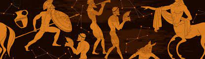

Sobre o site
Portal mitico
Bem-vindo ao nosso site que explora diferentes mitologias ao redor do mundo.
Mitologia Egípcia
A mitologia egípcia é um complexo sistema de crenças do Antigo Egito, com uma rica variedade de deuses como Ra, Osíris e Ísis, e histórias que explicam a criação do mundo e a vida após a morte.
Mitologia Nórdica
A mitologia nórdica é originária dos povos escandinavos, apresentando deidades como Odin, Thor e Loki. Suas histórias envolvem batalhas cósmicas e o Ragnarök, o fim do mundo.
Mitologia Grega
A mitologia grega é famosa por suas divindades como Zeus, Atena e Afrodite. Essas histórias míticas explicam a origem dos deuses e a natureza humana.
Mitologia Brasileira
A mitologia brasileira inclui entidades como o Saci-Pererê, Curupira e Iara. Essas lendas são parte da rica cultura folclórica do Brasil.
Mitologia Xintoísta
O Xintoísmo é a religião tradicional do Japão, com kami (espíritos) e histórias que envolvem a criação do arquipélago japonês e suas divindades.
Mitologia Chinesa
A mitologia chinesa possui figuras como o Imperador de Jade, o Deus da Longevidade e a Deusa da Misericórdia. Histórias de deuses e heróis estão enraizadas na cultura chinesa.
Explore as páginas individuais para mergulhar mais fundo nas fascinantes mitologias de diferentes partes do mundo.